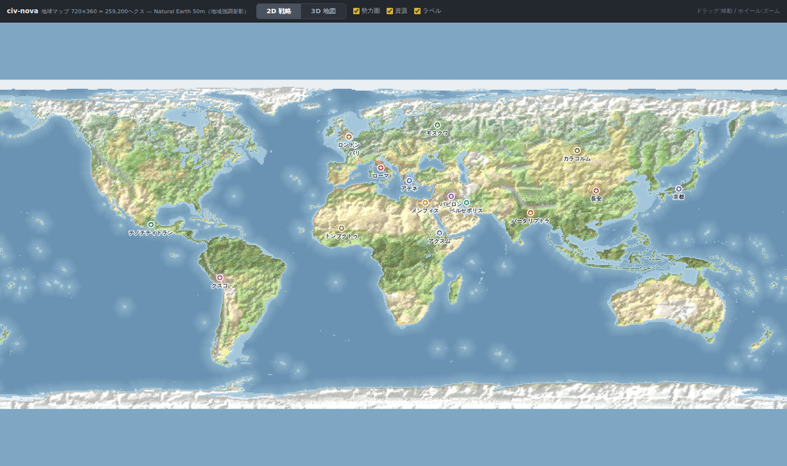
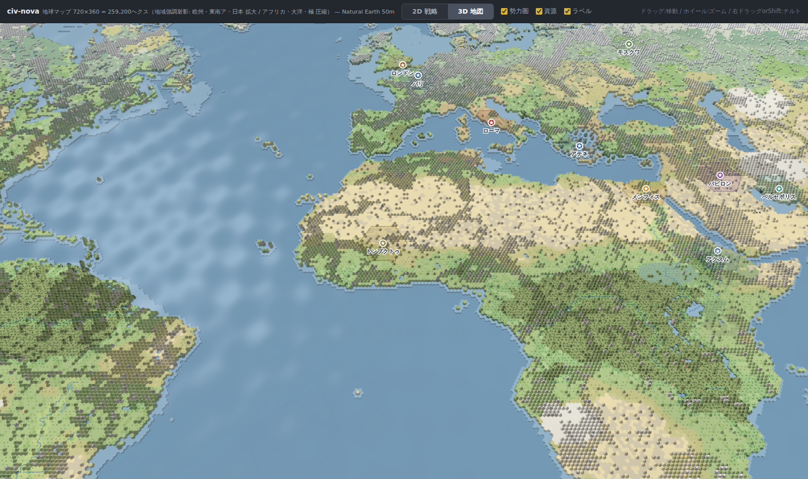
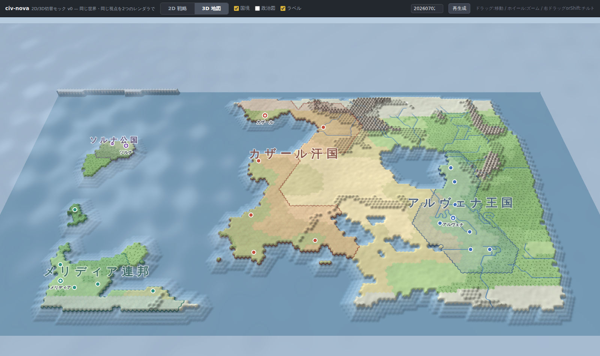
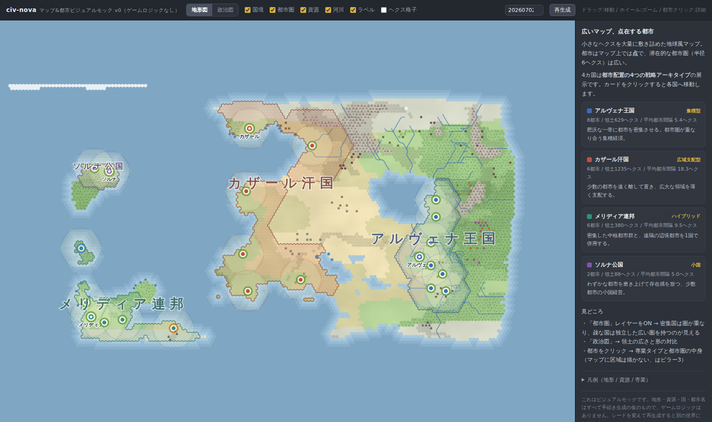

civ-novaビジュアルモック置き場
Civ4インスパイアの4Xストラテジー設計プロジェクトのモック集。すべて単一HTML・依存なしで、ブラウザだけで動きます。ソースとデザインドキュメントは GitHubリポジトリ へ。

アプリ版
クライアント（開発中の本体）
TypeScript+WebGL2 のゲームクライアント。地球マップ・2D⇄3D・東西ラップ・レリーフ陰影・河川400本・産出ツールチップ。ローカルでは Tauri アプリとしても動く。

メイン
地球マップ（2D⇄3D切替）
720×360＝259,200ヘクス。Natural Earth実データ+地域強調射影。実物の大陸棚、森林3種、Civ風タイル3D、歴史文明16都市。

実証
2D⇄3Dレンダラ切替
同じ生成世界・同じ視点を、2Dアトラス調と素のWebGL2レリーフで切り替える構造実証。シード変更で再生成可。

都市戦略
都市配置アーキタイプ
集積/広域/ハイブリッド/小国の4戦略を1枚のマップで対比。都市圏レイヤー・都市詳細パネルつき。